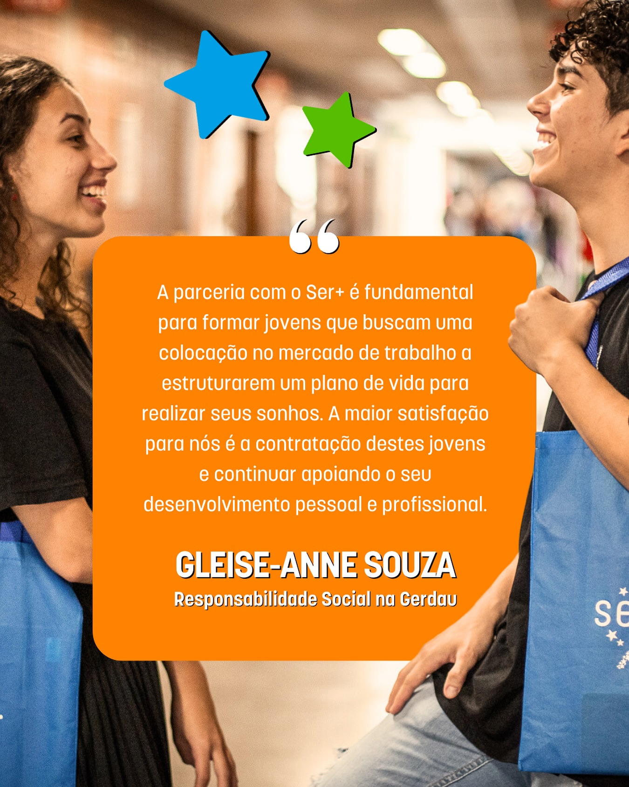
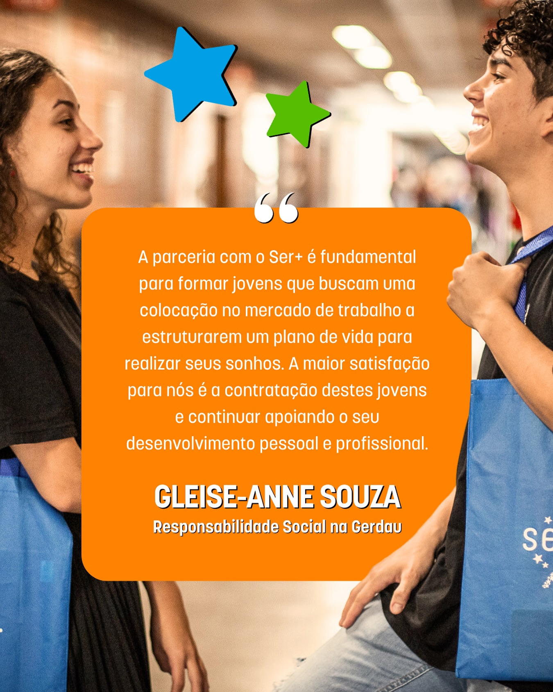

.png)
.png) 

Instituto Ser+
O Instituto Ser+ é uma ONG dedicada a transformar a vida de jovens em situação de vulnerabilidade social, oferecendo oportunidades de empregabilidade e desenvolvimento pessoal. Com mais de 10 anos de atuação, o Instituto Ser+ já ajudou mais de 35 mil vidas a se reintegrarem no mercado de trabalho, proporcionando cursos gratuitos, capacitação e acesso a oportunidades de emprego.
O que fazemos
O Instituto Ser+ oferece cursos gratuitos de capacitação profissional em diversas áreas e se dedica a conectar os jovens a empresas que compartilham o compromisso com a transformação social. Em parceria com grandes empresas como Google, Itaú, Pfizer e Raizen, o instituto ajuda a formar uma nova geração de profissionais qualificados e com as habilidades necessárias para o mercado de trabalho.
Além disso, a ONG proporciona mentorias, orientação profissional e desenvolvimento de habilidades pessoais que preparam os jovens para desafios profissionais e a construção de suas carreiras. A abordagem do Ser+ tem mostrado resultados concretos, com milhares de jovens que conseguiram não apenas um emprego, mas também uma mudança significativa em suas vidas.
Missão e Visão
Missão
Promover a inclusão social e econômica de jovens por meio de programas de capacitação e oportunidades de emprego, transformando suas vidas e comunidades.
Visão
Ser uma organização referência na transformação social, empoderando jovens e criando oportunidades para um futuro mais justo e igualitário.
Como Participar
Se você é um jovem em busca de capacitação e novas oportunidades, o Instituto Ser+ oferece diversos cursos e programas de desenvolvimento profissional. Além disso, as empresas podem se tornar parceiras e contribuir com essa transformação, oferecendo vagas de emprego e mais oportunidades para os jovens atendidos pela ONG.
Junte-se a nós
Juntos, podemos fazer a diferença. Seja um parceiro ou um jovem transformado por essas oportunidades.